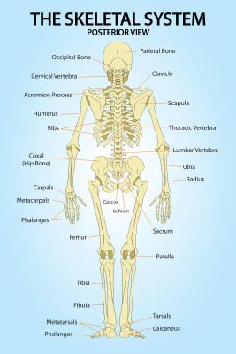

Interesting facts about The Human Skeleton
- Babies are born with over 300 bones...
- The smallest bone in the body is in your ear, which helps us hear. WOW!
- More than half your bones are in your hands and feet. Out of 206, 106 are in them（⊙ｏ⊙）
Use this link for more help

Interesting facts about Our Nerovus System
- Neurons may look different from one another,as it depends on what they’re programmed to do.
- There are two types of nervous systems.It has voluntary and involuntary nervous systems.
- The parasympathetic nervous system controls bodily functions when a person is at rest

Interesting facts about Our Digestive System
- The average person produces 2 pints of saliva every day,that is 32 ounces,
- The gut-brain axis is the close bond that exists between the digestive system and your brain. Emotions (including stress) and brain disorders affect how your body digests food.
- The small intestine is about 22-23 feet long while the large intestine is only about 5 feet long.
Use this link for more help
Interesting facts about Our Respiratory System
- You lose a lot of water just by breathing. When you exhale, you also breathe out a lot of water.
- Some people can hold their breath for more than 20 minutes. The average time an adult can hold his or her breath is between 30 and 60 seconds..
- The lungs are the only organs that can float on water. Each of your lungs contains about 300 million balloon-like structures called alveoli,
Use this link for more help
 I would love if you viewed this. Thanks
I would love if you viewed this. Thanks